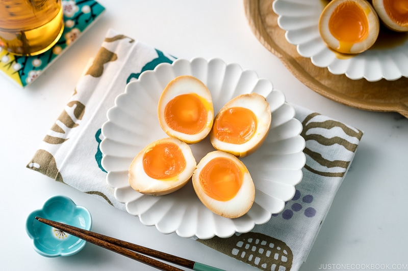

Ramen eggs are Japanese soft-boiled eggs known for their custardy, jammy, runny yolk, and umami flavor. They are marinated overnight in a sweetened soy-based sauce. In Japan, we call these marinated eggs Ajitsuke Tamago (味付け玉子), short for Ajitama (味玉) or Nitamago (煮玉子).